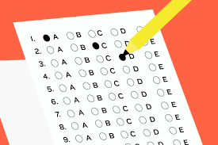

Gabarito
Resposta:
"É responsável por criar uma conexão entre os sistemas de computação remotos. Garante que os dados possam viajar de um computador para outro, mantendo assim a segurança, integridade e entrega dos dados. "
Resposta:
"É uma estrutura em rede que permite que os usuários acessem recursos ou serviços remotamente. O cliente é o computador que se conecta ao servidor e usa seus recursos ou serviços. Uma rede cliente-servidor permite que os usuários acessem aplicações."
3) Qual mecanismo de endereçamento adotado pela camada de transporte?
Resposta:
3) Qual mecanismo de endereçamento adotado pela camada de transporte?
A camada de transporte utiliza o mecanismo de endereçamento chamado portas de extremidade. As portas de extremidade são usadas para identificar diferentes fluxos de dados no mesmo endereço IP. Cada porta é um número entre 0 e 65535, que é um código único usado para identificar um fluxo de dados. Por exemplo, uma porta de extremidade de 80 é usada para tráfego HTTP, enquanto uma porta de extremidade de 25 é usada para tráfego SMTP.
Como ele funciona?
Resposta:
Além disso, as portas de extremidade também são usadas para estabelecer conexões e para controlar a sequência dos pacotes de dados.
Existe alguma regulamentação?
Resposta:
O mecanismo de endereçamento de portas de extremidade é regulamentado pelo IANA (Internet Assigned Numbers Authority). O IANA atribui portas a protocolos padrão para uso público. As portas dos protocolos não padrão são designadas como portas dinâmicas e têm números acima de 1024.
4) Quais as principais características do UDP? Em que situação ele é recomendado?
Resposta:
O UDP (User Datagram Protocol) é um protocolo de camada de transporte da família TCP/IP, que é usado para enviar mensagens de um computador para outro na rede. As principais características do UDP são as seguintes: não é orientado à conexão, não é confiável, não garante entrega dos dados, não tem detecção de erros, não tem retransmissão de pacotes e não tem congestionamento. Por não ser orientado à conexão, o UDP não necessita estabelecer uma conexão prévia entre os computadores, o que torna o protocolo mais rápido. Além disso, o UDP fornece um serviço de melhor eficiência de banda para um sistema final. Ele é recomendado para aplicações que não precisam de muita precisão na entrega dos dados, como streaming de vídeo, jogos online e serviços de voz sobre IP.
5) O que é uma conexão?
Resposta:
Uma conexão é uma ligação entre dispositivos, geralmente entre o computador ou o dispositivo de um usuário e um servidor remoto. Os usuários podem estabelecer conexões com redes locais ou remotas usando dispositivos como modems, cabos de rede, antenas Wi-Fi e protocolos de rede. Para ilustrar isso, imagine que a conexão é um tubo que liga o computador/dispositivo do usuário ao servidor remoto. O computador/dispositivo do usuário pode enviar e receber dados por esse tubo, permitindo que eles acessem recursos ou serviços remotos.